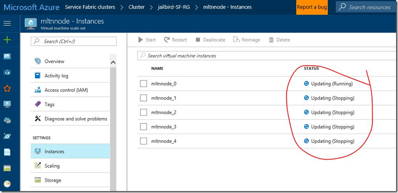
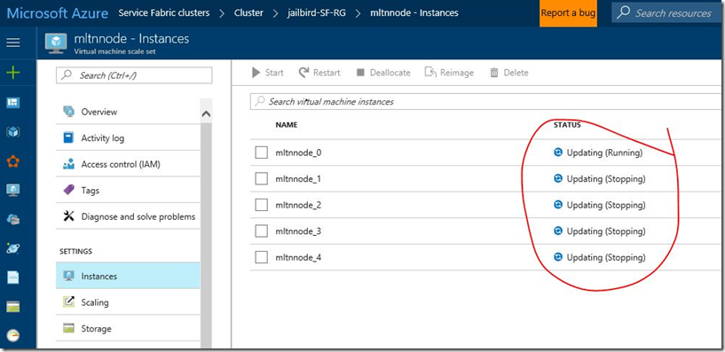

[ServiceFabric] How to change/reset RDP password for Service Fabric VMSS/VMSS instances using Powershell
Maheshk [MSFT]Today, I had this question suddenly asked by one of my colleague for his customer. I never tried this before but aware that it was not that straight forward to reset from Azure portal  . After searching my emails, I found a PS script recommended in the past. I was curious to test and share it. so quickly deployed a cluster and verified. It worked.
Login-AzureRmAccount
$vmssName = "mltnnode"
$vmssResourceGroup = "jailbird-SF-RG"
$publicConfig = @{"UserName" = "mikkyuname"}
$privateConfig = @{"Password" = "newpass@1234"}
$extName = "VMAccessAgent"
$publisher = "Microsoft.Compute"
$vmss = Get-AzureRmVmss -ResourceGroupName $vmssResourceGroup -VMScaleSetName $vmssName
$vmss = Add-AzureRmVmssExtension -VirtualMachineScaleSet $vmss -Name $extName -Publisher $publisher -Setting $publicConfig -ProtectedSetting $privateConfig -Type $extName -TypeHandlerVersion "2.0" -AutoUpgradeMinorVersion $true
Update-AzureRmVmss -ResourceGroupName $vmssResourceGroup -Name $vmssName -VirtualMachineScaleSet $vmss

For Linux:- https://azure.microsoft.com/en-us/blog/using-vmaccess-extension-to-reset-login-credentials-for-linux-vm/
Ps:- Allow few mins to go through this VMSS instance update. You can navigate to VMSS > Instances to see the update is over and in “running” state, so that you can start RDP with your new password.
. After searching my emails, I found a PS script recommended in the past. I was curious to test and share it. so quickly deployed a cluster and verified. It worked.
Login-AzureRmAccount
$vmssName = "mltnnode"
$vmssResourceGroup = "jailbird-SF-RG"
$publicConfig = @{"UserName" = "mikkyuname"}
$privateConfig = @{"Password" = "newpass@1234"}
$extName = "VMAccessAgent"
$publisher = "Microsoft.Compute"
$vmss = Get-AzureRmVmss -ResourceGroupName $vmssResourceGroup -VMScaleSetName $vmssName
$vmss = Add-AzureRmVmssExtension -VirtualMachineScaleSet $vmss -Name $extName -Publisher $publisher -Setting $publicConfig -ProtectedSetting $privateConfig -Type $extName -TypeHandlerVersion "2.0" -AutoUpgradeMinorVersion $true
Update-AzureRmVmss -ResourceGroupName $vmssResourceGroup -Name $vmssName -VirtualMachineScaleSet $vmss

For Linux:- https://azure.microsoft.com/en-us/blog/using-vmaccess-extension-to-reset-login-credentials-for-linux-vm/
Ps:- Allow few mins to go through this VMSS instance update. You can navigate to VMSS > Instances to see the update is over and in “running” state, so that you can start RDP with your new password.
{kind=link}